Выберите инструмент Complex Star (Звезда) ( ).
).
Переведите указатель (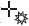) на рабочую область, нажмите кнопку мыши и, не отпуская ее, перетащите мышь. При этом будет создан объект — звезда.
Закончите создание звезды освобождением кнопки мыши.
В данной лекции рассмотрим инструменты для создания геометрических примитивов (прямоугольника, эллипса, многоугольника и звезды) и параметры, которые отображаются на панели свойств при работе с этими инструментами.
С инструментом Rectangle (Прямоугольник) вы кратко познакомились в предыдущей лекции. Рассмотрим параметры, которые отображаются на панели свойств при выборе данного инструмента (рис. 3.1).
Left Rectangle Corner Roundness (Скругление левых углов прямоугольника), Right Rectangle Corner Roundness (Скругление правых углов прямоугольников). Величина скругления любого из четырех углов прямоугольника может меняться от 0 до 100. Значение 0 соответствует отсутствию скругления, а величина 100 означает, что угол полностью скруглен.
Round Corners Together (Скруглить все углы). Эта кнопка ("замок") используется для включения или отключения режима скругления всех углов. При необходимости скруглить отдельные углы прямоугольника нужно отжать кнопку Round Corners Together (Скруглить все углы).
В большинстве случаев углы удобнее скруглять вручную, с помощью инструмента Shape (Форма) (). Выбрав данный инструмент, наведите указатель мыши на одну из контрольных узловых точек, расположенных на углах прямоугольника. При наведении на узловую контрольную точку указатель мыши примет вид 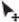 (рис. 3.2).
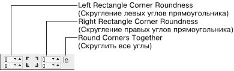
Рис. 3.1 Панель свойств при активном инструменте Rectangle (Прямоугольник)
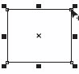
Рис. 3.2 Скругление углов с помощью контрольной узловой точки
Чтобы изменить скругление всех углов прямоугольника с помощью мыши, выполните следующие действия.
Выделите требуемый прямоугольник.
Выберите инструмент Shape (Форма) ().
Наведите указатель мыши на одну из узловых контрольных точек.
Когда указатель примет вид , нажмите кнопку мыши и, не отпуская ее, задайте требуемое скругление углов перемещением мыши. Отпустите кнопку мыши.
Чтобы изменить скругление одного из углов прямоугольника, действуйте следующим образом.
Выделите требуемый прямоугольник.
Выберите инструмент Shape (Форма) ().
Наведите указатель мыши на одну из узловых контрольных точек.
Когда указатель примет вид , щелкните кнопкой мыши. Выделенной останется только одна контрольная узловая точка.
Не отводя указатель от этой точки, нажмите кнопку мыши и, не отпуская ее, протащите мышь, чтобы задать требуемое скругление угла. Отпустите кнопку мыши.
Чтобы применить инструмент Ellipse (Эллипс), выполните следующие действия.
Выберите на панели инструментов инструмент Ellipse (Эллипс) (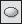).
Переведя указатель (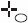) на рабочую область, нажмите кнопку мыши и, не отпуская ее, протащите мышь, создавая объект — эллипс.
Закончите создание эллипса освобождением кнопки мыши.
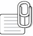
СОВЕТ. Если при построении эллипса удерживать нажатой клавишу Ctrl, то итоговая фигура будет представлять собой круг. Удерживание клавиши Shift позволяет строить эллипс от центральной точки в стороны, а не по крайним точкам.
Инструмент Ellipse (Эллипс) позволяет создавать следующие фигуры: эллипс, окружность, сектор и дугу (рис. 3.3).
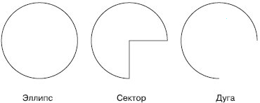
Рис. 3.3 Примеры фигур, созданных с помощью инструмента Ellipse (Эллипс)
Рассмотрим параметры, отображающиеся на панели свойств при активном инструменте Ellipse (Эллипс) (рис. 3.4).
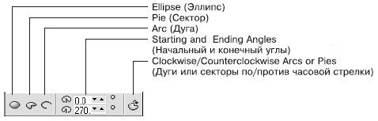
Рис. 3.4 Панель свойств при выборе инструмента Ellipse (Эллипс)
ПРИМЕЧАНИЕ. Эллипс и сектор представляют собой замкнутые объекты, в то время как дуга является разомкнутым контуром.
Объекты Pie (Сектор) и Arc (Дуга) имеют следующие параметры, определяющие их внешний вид:
Starting and Ending Angles (Начальный и конечный углы) — угловой размер длины дуги окружности;/p>
кнопка Clockwise/Counterclockwise Arcs or Pies (Дуги и секторы по/против часовой стрелки) — задает направление отсчета, что позволяет инверсированно отобразить сектор или дугу (рис. 3.5).
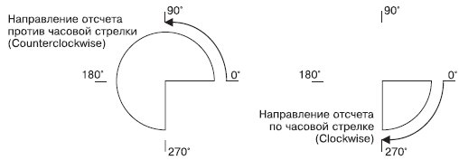
Рис. 3.5 Пример инверсированного отображения сектора
Использование полей панели свойств для указания начального и конечного углов секторов и дуг требует знания геометрии и хорошего ориентирования в угловой системе координат. В большинстве случаев подобные действия удобнее выполнять вручную, с помощью инструмента Shape (Форма) ().
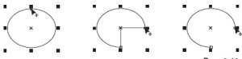
Рис. 3.6 Преобразование эллипса в сектор и дугу с помощью контрольной узловой точки
Выбрав инструмент Shape (Форма), наведите указатель мыши на одну из контрольных узловых точек (сверху посередине — у эллипса, на концах — у дуг и секторов). При наведении на узловую контрольную точку указатель мыши принимает вид (рис. 3.6).
Чтобы с помощью мыши изменить числовое значение начального или конечного угла, выполните следующие действия.
Выделите требуемый эллипс.
Выберите инструмент Shape (Форма) ().
Наведите указатель мыши на одну из узловых контрольных точек.
Когда указатель примет вид , нажмите кнопку мыши и, не отпуская ее, протащите мышь, задав требуемое значение угла.
Отпустите кнопку мыши.
СОВЕТ. Выполнением указанных действий можно получить сектор или дугу. Вид построенной фигуры зависит от того, где располагается указатель мыши в момент освобождения кнопки. Расположение указателя мыши внутри эллипса приводит к образованию сектора, снаружи — дуги.
Инструмент Polygon (Многоугольник) предназначен для построения многоугольников. Количество вершин можно задавать в диапазоне от 3 до 500.
Применяется следующим образом.
Выберите на панели инструмент Polygon (Многоугольник) (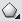).
Переведите указатель (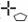) на рабочую область, нажмите кнопку мыши и, не отпуская ее, протащите мышь. При этом будет создан объект — многоугольник.
3. Закончите создание многоугольника освобождением кнопки мыши.
СОВЕТ. Если при создании многоугольника удерживать клавишу Ctrl, то итоговая фигура будет представлять собой правильный многоугольник. Удержание клавиши Shift позволяет строить многоугольник от центральной точки в стороны, а не по диагонали.
ПРИМЕЧАНИЕ. Многоугольник представляет собой замкнутый объект.
При активизации инструмента Polygon (Многоугольник) на панели свойств отображается единственный параметр, определяющий внешний вид итогового объекта, — Number of points or sides of polygon, star and complex star (Количество вершин или сторон многоугольника, звезды и сложной звезды) (рис. 3.7, 3.8).
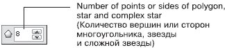
Рис. 3.7 Панель свойств при выборе инструмента Polygon (Многоугольник)
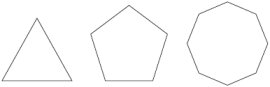
Рис. 3.8 Примеры многоугольников
Существует возможность изменения внешнего вида многоугольника вручную, с помощью инструмента Shape (Форма) () (рис. 3.9).
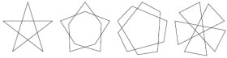
Рис. 3.9 Варианты модификации пятиугольника с помощью инструмента Shape (Форма)
Для изменения внешнего вида многоугольника с помощью инструмента Shape (Форма) выполните следующие действия.
Выделите требуемый эллипс.
Выберите инструмент Shape (Форма) ().
Наведите указатель мыши на одну из контрольных точек на вершинах или на серединах отрезков, соединяющих вершины (рис. 3.10).
Когда указатель примет вид , нажмите кнопку мыши и, не отпуская ее, перетащите мышь, придав объекту требуемый вид.
Отпустите кнопку мыши.
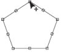
Рис. 3.10 Контрольные узлы многоугольника
ПРИМЕЧАНИЕ. При перетаскивании контрольной точки изменяется положение всех симметричных ей контрольных точек, то есть при изменении положения одной вершины многоугольника симметрично перемещаются и все остальные.
СОВЕТ. Нажатие и удерживание на клавиатуре клавиши Ctrl при перетаскивании контрольной узловой точки приводит к изменению положения симметричных узловых точек и созданию правильной фигуры.
В новой версии программы CorelDRAW X3 существует два инструмента по работе с объектами в виде звезд: Star (Звезда) и Complex Star (Сложная звезда). Основным отличием объектов, полученых построением с помощью инструмента Star (Звезда), от объектов, построенных инструментом Complex Star (Сложная звезда), является то, что они не имеют самопересечений, в то время как для объектов Complex Star (Сложная звезда) это качество является определяющим (рис. 3.11).
Чтобы применить инструмент Star (Звезда), необходимо выполнить такие действия.
Выбрать инструмент Star (Звезда) (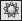).
Расположить указатель мыши на рабочей области.
Нажать основную кнопку мыши и, не отпуская ее, перетащить мышь, тем самым создавая объект — звезду.
Закончить создание звезды освобождением кнопки мыши.
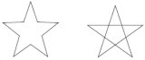
Рис. 3.11 Объекты, полученные с помощью инструмента Star (Звезда) (слева) и Complex Star (Сложная звезда) (справа)
СОВЕТ. Если при создании объекта с помощью инструмента Star (Звезда) удерживать на клавиатуре клавишу Ctrl, то итоговая фигура будет представлять собой правильную звезду. Удерживание клавиши Shift позволяет строить звезду от центральной точки в стороны, а не по диагонали.
При активном инструменте Star (Звезда) на панели свойств отображаются параметры, представленные на рис. 3.12.
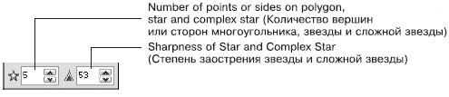
Рис. 3.12 Панель свойств при активном инструменте Star (Звезда)
Данные параметры определяют внешний вид итогового объекта.
Number of points or sides on polygon, star and complex star (Количество вершин или сторон многоугольника, звезды или сложной звезды).
Sharpness of Star and Complex Star (Степень заостренности звезды и сложной звезды). Если задать значение данного параметра равным 1, то звезда превратится в обычный многоугольник (рис. 3.13).
Существует также возможность изменения внешнего вида этих фигур вручную, свободным движением указателя мыши. Для этого следует воспользоваться контрольными узловыми точками, расположенными на вершинах и на серединах отрезков, соединяющих вершины (рис. 3.14).
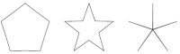
Рис. 3.13 Примеры пятиконечной звезды с различной остротой углов (1, 50 и 99)
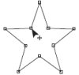
Рис. 3.14 Контрольные узловые точки звезды
Чтобы изменить внешний вид звезды с помощью мыши, выполните следующие действия.
Выделите требуемую звезду.
Выберите инструмент Shape (Форма) ().
Наведите указатель мыши (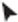) на одну из контрольных точек.
Когда указатель примет вид , нажмите основную кнопку мыши и, не отпуская ее, перетащите мышь, придавая объекту требуемый вид.
Отпустите кнопку мыши.
ПРИМЕЧАНИЕ. При перетаскивании контрольных точек изменяется положение всех симметричных ей контрольных точек, то есть если вы изменяете положение одной вершины, то симметрично перемещаются и все остальные.
Чтобы применить инструмент Complex Star (Звезда), выполните следующие действия.
Выберите инструмент Complex Star (Звезда) ().
Переведите указатель (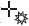) на рабочую область, нажмите кнопку мыши и, не отпуская ее, перетащите мышь. При этом будет создан объект — звезда.
Закончите создание звезды освобождением кнопки мыши.
СОВЕТ. Если при создании звезды удерживать клавишу Ctrl, то итоговая фигура будет представлять собой правильную звезду. Удерживание клавиши Shift позволяет строить объект от центральной точки в стороны, а не по диагонали.
Параметры, появляющиеся на панели свойств при выборе инструмента Complex Star (Звезда), идентичны параметрам при активном инструменте Star (Звезда) (см. рис. 3.12). Они определяют внешний вид итогового объекта.
Number of points or sides on polygon, star and complex star (Количество вершин или сторон многоугольника, звезды или сложной звезды).
Sharpness of Star and Complex Star (Степень зaостренности звезды и сложной звезды). По умолчанию при построении звезды вершины соединяются между собой через одну. Чем больше вершин у звезды, тем большее количество различных форм можно получить (рис. 3.15).
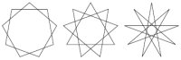
Рис. 3.15 Девятиконечная сложная звезда с различными значениями степени заострения
Кроме того, существует возможность изменения внешнего вида этих фигур вручную, с помощью мыши. Для этого предназначены контрольные узловые точки, расположенные на вершинах и на серединах отрезков, соединяющих вершины (рис. 3.16).
Для изменения внешнего вида звезды с помощью мыши используют инструмент Shape (Форма) ().
Выделите требуемую звезду.
Выберите инструмент Shape (Форма) ().
Наведите указатель мыши на одну из контрольных точек.
Когда указатель примет вид , нажмите основную кнопку мыши и, не отпуская ее, перетащите мышь, придавая объекту требуемый вид.
Отпустите кнопку мыши.
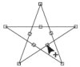
Рис. 3.16 Контрольные узловые точки сложной звезды
СОВЕТ. Нажатие и удержание на клавиатуре клавиши Ctrl при перетаскивании контрольной узловой точки мышью приводит к изменению положения симметричных узловых точек и созданию правильной фигуры.
Изменяя внешний вид прямоугольников, эллипсов и многоугольников с помощью панели свойств, вы сможете использовать геометрические примитивы в качестве заготовок при построении составных изображений.